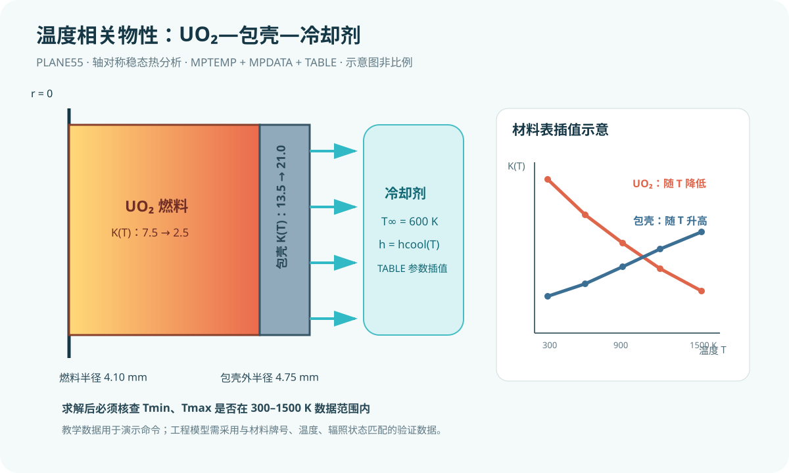

{kind=link}
验证状态：已静态检查，尚未运行 MAPDL
已完成命令结构、材料温度点对应、选择集、载荷和 SI 单位一致性静态检查；未启动 MAPDL。材料数值仅用于教学。

今日目标
在轴对称燃料棒稳态热分析中，用 MPTEMP 与 MPDATA 输入 UO₂ 和包壳的分段温度相关导热率，并用参数表管理冷却剂温度与换热系数。
物理问题
模型沿用上一课的 UO₂ 芯块—包壳轴对称截面，采用 SI 单位制（m、kg、s、K、W、Pa）。燃料半径 4.10 mm，包壳外半径 4.75 mm，轴向建模长度 0.10 m。燃料均匀发热，包壳外表面与冷却剂对流换热。
本课用教学用示例表展示温度插值方法：UO₂ 导热率随温度升高而降低，包壳导热率随温度升高略有增加。数值只用于学习命令，不应直接用于反应堆设计或安全分析。冷却剂在稳态实体外未单独划分网格，因此其温度相关性通过 tbulk、hconv 参数表表示；更高阶模型应由系统热工或 CFD 给出局部壁温、体温和换热系数。
关键命令
MPTEMP,1,...：定义材料属性表的温度点，单位 K。MPDATA,KXX,mat,1,...：在相同温度点输入指定材料的导热率。*DIM,...,TABLE：建立以温度为自变量的 APDL 表参数。*TAXIS：为表参数写入温度坐标。*SET：定义标量参数并从表中读取工况值。MPWRITE：把材料数据写入文本文件，便于复核。BFE,HGEN：仅对燃料单元施加体积热源。SFL,CONV：在包壳外壁施加对流边界。
材料与边界数据
| 温度/K | UO₂ 导热率 W/(m·K) | 包壳导热率 W/(m·K) | 冷却剂换热系数 W/(m²·K) |
|---:|---:|---:|---:|
| 300 | 7.5 | 13.5 | 1.8×10⁴ |
| 600 | 5.0 | 15.0 | 2.5×10⁴ |
| 900 | 3.8 | 17.0 | 3.0×10⁴ |
| 1200 | 3.0 | 19.0 | 3.3×10⁴ |
| 1500 | 2.5 | 21.0 | 3.5×10⁴ |
MAPDL 会在给定温度点之间插值材料属性。超出表格范围时的外推可能产生不可靠结果，因此求解后必须检查温度是否落在数据覆盖区间内。
完整脚本
见同目录 [example.inp](example.inp)。示例同时导出最高温度和最低温度，便于检查是否超出 300–1500 K 的材料表范围。
预期结果
最高温度仍应出现在燃料中心线附近。与常数导热率模型相比，UO₂ 在高温区导热率下降会强化中心温升，温度分布不再与固定导热率解完全一致。脚本未经 MAPDL 实际求解，不给出虚构数值；运行后应查看温度云图与 lesson4_results.txt。
验证清单
- **单位检查**：温度点使用 K，导热率使用 W/(m·K)，换热系数使用 W/(m²·K)。
- **适用区间**：确认求解所得
tmin与tmax都在 300–1500 K 内；若越界，应补充有依据的物性数据。 - **趋势检查**：将 UO₂ 导热率改为常数 3.0 W/(m·K)，比较最高温度，确认材料非线性影响方向合理。
- **迭代检查**：查看求解输出中的非线性迭代与收敛信息；温度相关材料会使热传导方程成为材料非线性问题。
- **网格检查**：把单元尺寸从 0.20 mm 降至 0.10 mm，比较最高温度变化。
常见错误
MPTEMP温度点与MPDATA数据错位：温度和属性必须按相同序号一一对应。- 把摄氏度直接当 K 输入：温度零点错误会改变插值位置，应统一为绝对温度。
- 温度超出数据表仍直接采用结果：应扩充经验证的数据范围，不能依赖无依据的外推。
练习题
- 将 UO₂ 的五个导热率分别降低 10%，比较最高温度，量化材料不确定性的敏感性。
- 将
coolant_case从 600 K 改为 900 K，使表参数自动更新换热系数；讨论燃料温度、包壳温度和材料数据覆盖范围如何变化。
后续瞬态课程会加入密度和比热；结构课程会加入弹性模量、泊松比与热膨胀系数的温度相关数据。工程分析应采用有出处、与材料牌号和辐照状态相匹配的数据库。
完整 example.inp（逐行中文注释）
01! 第4课：UO2、包壳与冷却剂的温度相关材料属性 02/CLEAR ! 清空当前数据库，避免旧模型残留 03/FILNAME,lesson4_temp_mat ! 设置作业名，便于识别求解输出文件 04/PREP7 ! 进入前处理器 05 06! ----- 参数：统一采用 m、kg、s、K、W、Pa ----- 07r_fuel=4.10e-3 ! UO2 燃料芯块半径，单位 m 08r_clad=4.75e-3 ! 包壳外半径，单位 m 09length=0.10 ! 轴向建模长度，单位 m 10qvol=2.0e8 ! 燃料均匀体积发热率，单位 W/m^3 11coolant_case=600.0 ! 当前冷却剂工况温度，单位 K 12esize_r=0.20e-3 ! 目标单元尺寸，单位 m 13 14! ----- 冷却剂边界参数表：表坐标为温度 K ----- 15*DIM,hcool,TABLE,5,1,1,TEMP ! 建立 5 个温度点的一维换热系数表 16*TAXIS,hcool(1,1),1,300,600,900,1200,1500 ! 写入换热系数表的温度坐标，单位 K 17hcool(1,1)=1.8e4 ! 300 K 对应换热系数，单位 W/(m^2·K) 18hcool(2,1)=2.5e4 ! 600 K 对应换热系数，单位 W/(m^2·K) 19hcool(3,1)=3.0e4 ! 900 K 对应换热系数，单位 W/(m^2·K) 20hcool(4,1)=3.3e4 ! 1200 K 对应换热系数，单位 W/(m^2·K) 21hcool(5,1)=3.5e4 ! 1500 K 对应换热系数，单位 W/(m^2·K) 22tbulk=coolant_case ! 将冷却剂体温设置为当前工况温度，单位 K 23hconv=hcool(coolant_case) ! 从温度表插值得到当前换热系数 24 25! ----- 单元与温度相关材料 ----- 26ET,1,PLANE55 ! 定义二维热传导单元 PLANE55 27KEYOPT,1,3,1 ! 启用轴对称选项，X 为半径、Y 为轴向 28MPTEMP,1,300,600,900,1200,1500 ! 定义材料属性的五个温度点，单位 K 29MPDATA,KXX,1,1,7.5,5.0,3.8,3.0,2.5 ! 定义材料 1 UO2 的温度相关导热率 30MPDATA,KXX,2,1,13.5,15.0,17.0,19.0,21.0 ! 定义材料 2 包壳的温度相关导热率 31MPWRITE,lesson4_materials,txt ! 导出材料表到文本文件，便于人工复核 32 33! ----- 轴对称 r-z 几何与材料分区 ----- 34RECTNG,0,r_fuel,0,length ! 建立燃料芯块的轴对称半截面 35RECTNG,r_fuel,r_clad,0,length ! 建立包壳的轴对称半截面 36AGLUE,ALL ! 粘合公共边界，使界面共享节点并保持温度连续 37ASEL,S,LOC,X,0,r_fuel ! 选择燃料半径范围内的面积 38AATT,1,,1 ! 为燃料面积指定材料 1 和单元类型 1 39ASEL,S,LOC,X,r_fuel,r_clad ! 选择包壳半径范围内的面积 40AATT,2,,1 ! 为包壳面积指定材料 2 和单元类型 1 41ALLSEL,ALL ! 恢复选择全部实体 42 43! ----- 网格与热载荷 ----- 44ESIZE,esize_r ! 设置全局目标单元尺寸 45AMESH,ALL ! 对燃料和包壳面积划分网格 46ESEL,S,MAT,,1 ! 仅选择材料号为 1 的燃料单元 47BFE,ALL,HGEN,,qvol ! 向燃料单元施加均匀体积热源 48ALLSEL,ALL ! 恢复选择全部实体 49LSEL,S,LOC,X,r_clad ! 选择包壳外表面线 50SFL,ALL,CONV,hconv,tbulk ! 施加当前冷却剂工况的对流边界 51ALLSEL,ALL ! 恢复选择全部实体 52FINISH ! 退出前处理器 53 54! ----- 稳态材料非线性热求解 ----- 55/SOLU ! 进入求解器 56ANTYPE,STATIC ! 指定稳态热分析 57NROPT,FULL ! 启用完全牛顿迭代处理温度相关材料非线性 58NEQIT,30 ! 设置每个载荷步最大平衡迭代次数 59SOLVE ! 求解温度相关燃料—包壳温度场 60FINISH ! 退出求解器 61 62! ----- 后处理与材料区间检查 ----- 63/POST1 ! 进入通用后处理器 64SET,LAST ! 读取最后一个已求解结果集 65PLNSOL,TEMP ! 绘制节点温度云图 66*GET,tmax,NODE,0,MAX,TEMP ! 提取全模型最高节点温度，单位 K 67*GET,tmin,NODE,0,MIN,TEMP ! 提取全模型最低节点温度，单位 K 68*CFOPEN,lesson4_results,txt ! 打开结果文本文件 69*VWRITE,tmin,tmax,hconv ! 写出温度范围和换热系数；下一行保持纯格式描述符 70('Tmin [K] = ',E16.8,', Tmax [K] = ',E16.8,', h [W/m2-K] = ',E16.8) 71*CFCLOS ! 关闭结果文件并刷新写入内容 72FINISH ! 退出后处理器并结束本课脚本